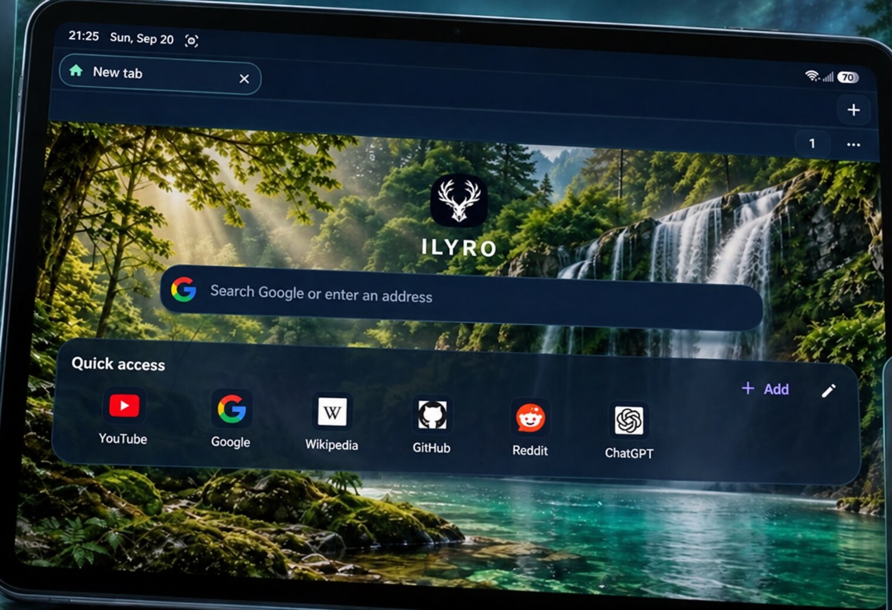
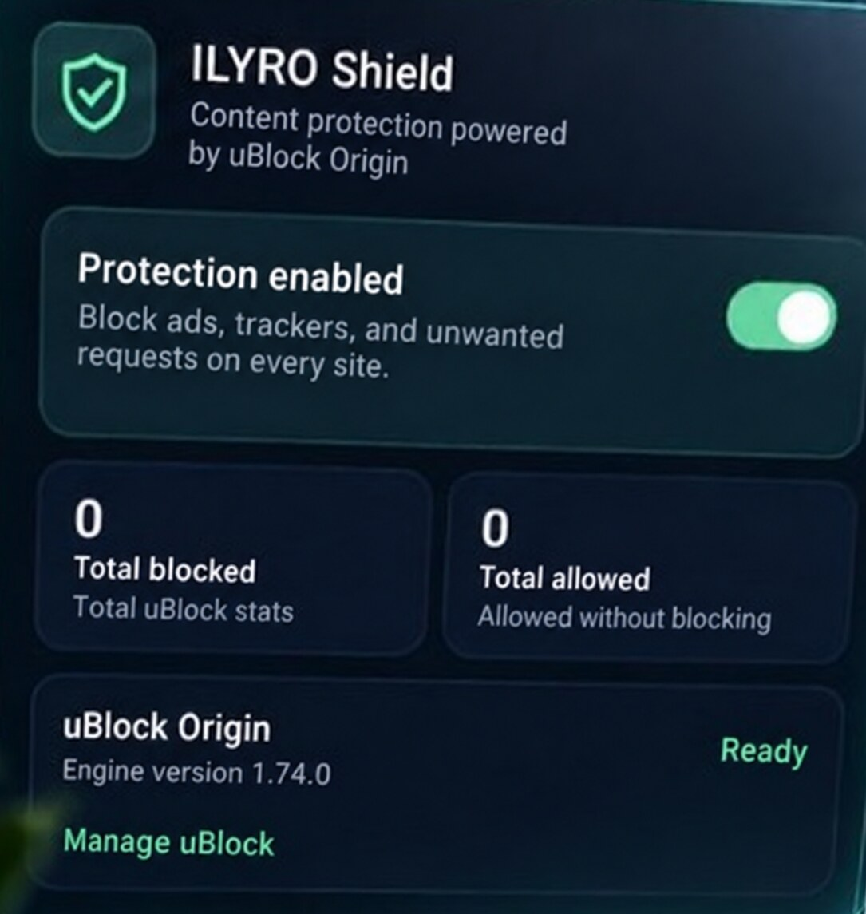
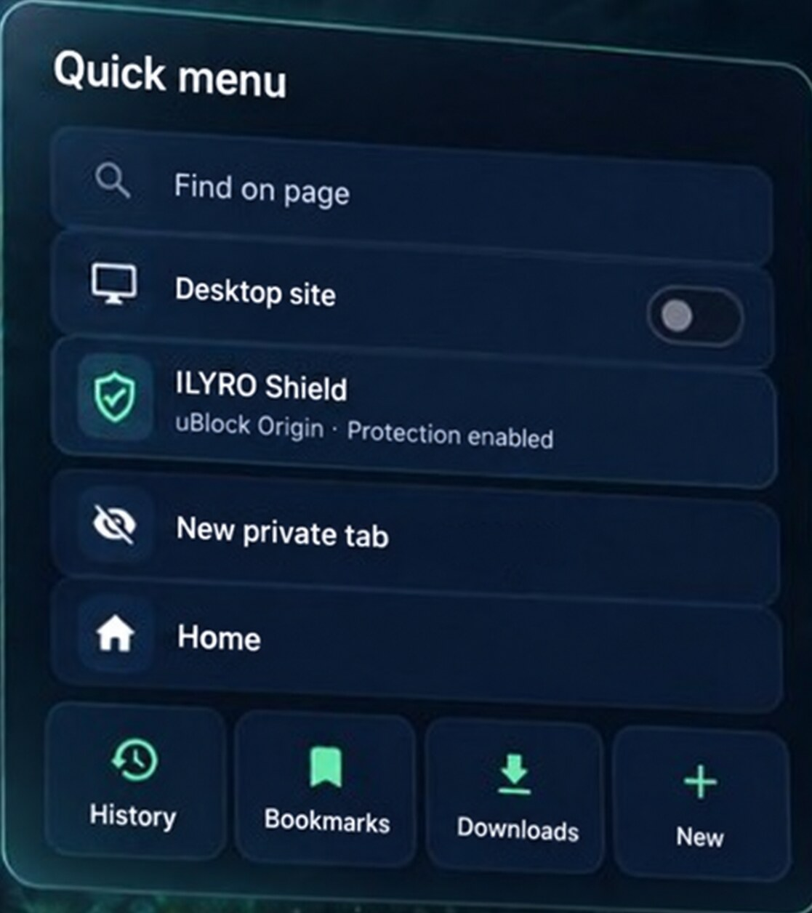
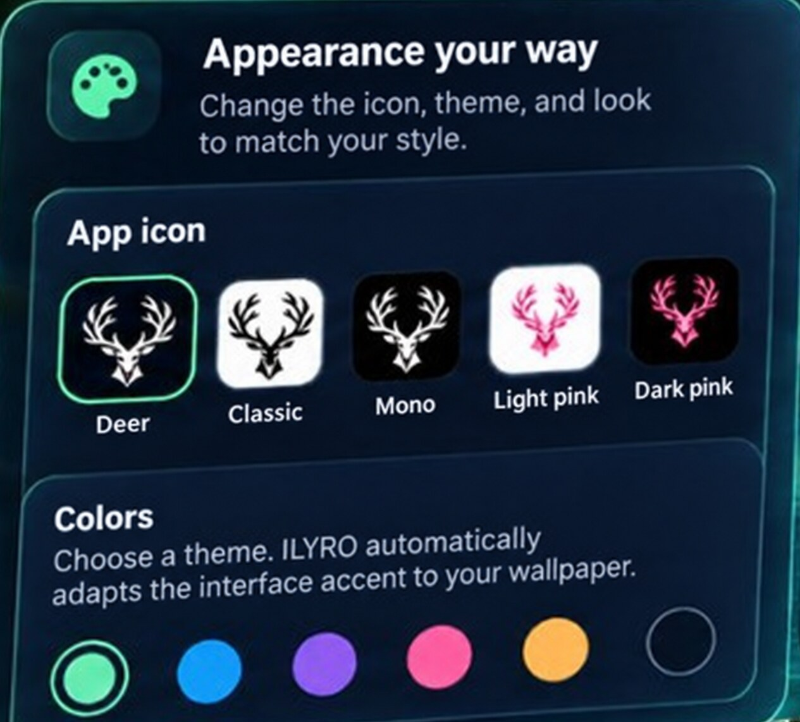
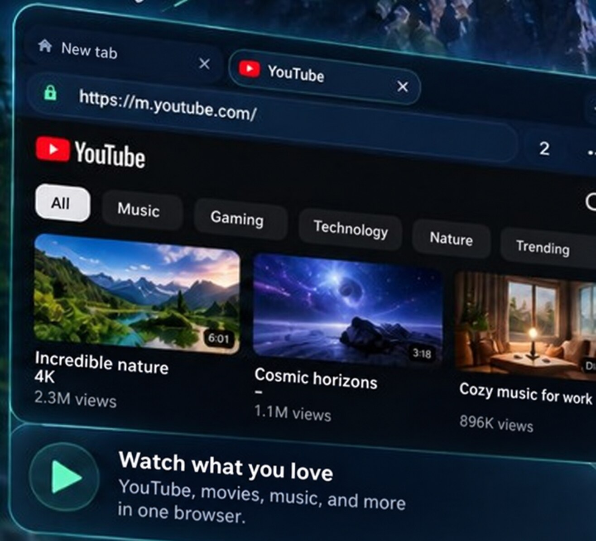
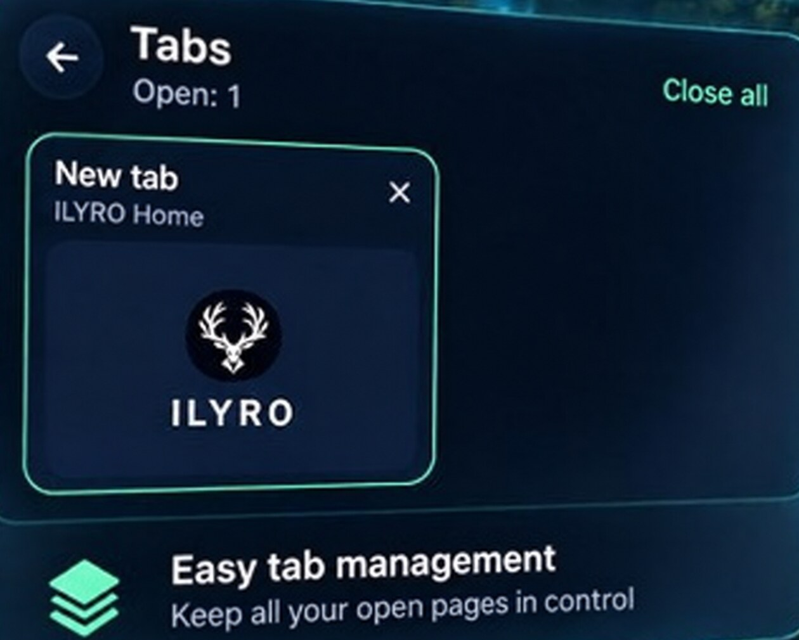
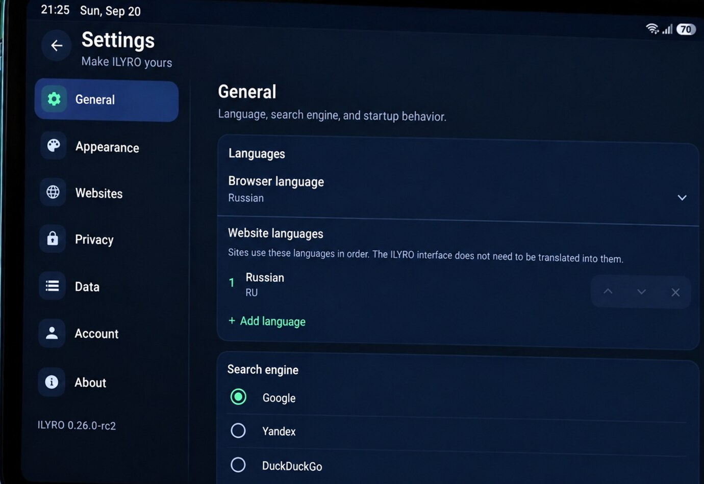

ProtectionBuilt-in uBlock Origin
blocks ads and trackers
blocks ads and trackers
FAST. SECURE. YOURS.
GeckoView, built-in uBlock Origin protection,
convenient tabs, fast downloads
and flexible personalization.
Release candidate · Pre-release

BROWSE
FREE
MORE POSSIBILITIES
A modern browser built for freedom.
Combines performance, privacy, and flexible settings.

Built-in uBlock Origin. A clean web without ads and trackers.

Quick menu with the actions you need. Everything at hand.

Themes, icons, colors, and more. Your style — your rules.
Sync through Google. Bookmarks, settings, and history on all devices.
Explore the ILYRO interface, with the screenshots translated into English.



ILYRO / ANDROID
Start using it today.
Release candidate · Pre-release
Your world.
More freedom.